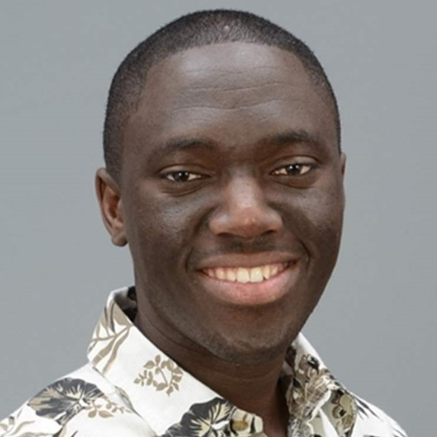

Short Bio
A computer scientist and software engineer, Kenneth Fletcher is an Assistant Professor of Computer Science at University of Massachusetts Boston (UMass Boston). Prior to joining UMass Boston, Kenneth worked with Product Innovation and Engineering as a Software Engineer. His research spans Service and Cloud Computing, Software Engineering and Metal Additive Manufacturing. He has been a technical reviewer for several journals and conferences including the IEEE Transactions on Service Computing (TSC), IEEE Transactions on Network and Service Management (TNSM), IEEE Conference on Service Computing (SCC) and IEEE Conference on Web Services (ICWS), just to name a few.
Upcoming Events & News
- I will be serving as a session chair at the Services Conference Federation (SCF 2017) to be held in Honolulu, HI from June 25 - June 30.
- I will be serving as a technical program committee member for the 2017 IEEE International Conference on Services Computing to be held in Honolulu, HI from June 25 - June 30.
- My paper titled "A Method for Dealing with Data Sparsity and Cold-Start Limitations in Service
Recommendation using Personalized Preferences" has been accepted in the 2017 IEEE International Conference on Cognitive Computing (IEEE ICCC 2017).
- Our paper titled "A SOA Approach to Improve Performance of Metal Additive Manufacturing Simulation" has been accepted in the 2017 IEEE International Conference on Congnitive Computing (IEEE ICCC 2017).
- [Ph.D. TA/RA Positions] I am looking for self-motivated students to join my research group. Read a few of my publications and if you are interested email me your CV. UMass Boston is classified as, Doctoral Universities: Higher Research Activity, according to the Carnegie Classification of Institutions of Higher Education.
My Latest Research
- Detecting "Fake" Likes/ Followers in Social Network using Personalized Preferences and Machine Learning.
- Cloud Additive Manufacturing Simulation using Amanzon AWS.